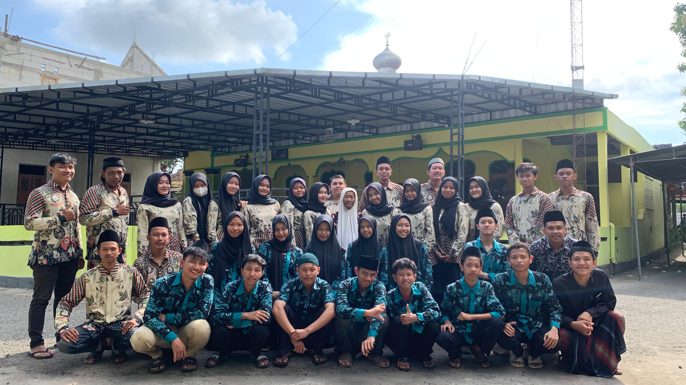
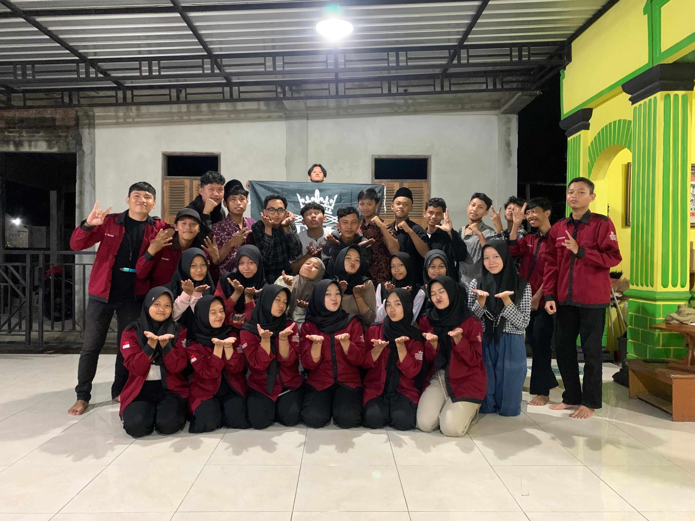

Tentang

Gema 45 adalah singkatan dari Generasi Muda Mudi Rt 4 dan 5, Gema 45 adalah sebuah Organisasi karangTaruna
yang ada di salah satu desa di Bantul, Yogyakarta. Organisasi ini sering kali mengadakan acara yang kecil
maupun besar untuk memeriahkan desa tersebut. Organisasi ini memiliki banyak sekali muda dan mudi yang turut
serta masuk ke dalam organisasi karangtaruna ini.
Event

Gema 45 ini juga sering mengadakan event, salah satunya yaitu senam pagi dan jalan sehat. Biasanya jika sudah
ada acara seperti ini warga setempat ber ramai ramai untuk ikut serta dalam mengikuti acara tersebut. Acara
ini biasanya selain untuk bersenang senang, juga bertujuan agar tubuh tetap sehat, mengingat di desa banyak
sudah ber umur lanjut usia.
Maps
Sejak diaspalnya jalan di desa tersebut, tidak heran banyak sekali orang orang yang menggunakan jalan tersebut
sebagai jalan alternative, karena sering kali terdapat kemacetan di jalan utama.
Neco Kidul Sabdodadi Bantul
Desa ini berlokasi di pinggir jalan besar, untuk itu desa ini sering di gunakan sebagai jalan alternative.